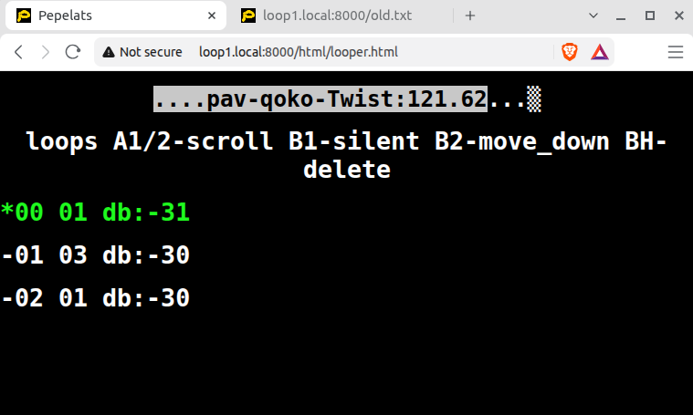
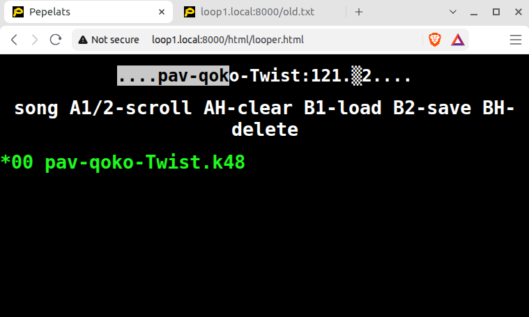

This starting page is available only if looper uses Web. When looper uses screen this page is not available. All other screenshots look similar on Web pages and on screen / terminal.
There are 4 song parts shown in here. List of numbers (ex: 5,5,15) shows how many loops each part has and number of bars in each loop.
Number in parenthesis -(00)- shows how many “undone” loops each part has. After “redo” this number decreases after “undo” – increases.
Part marked with star * is current part. Red color shows that it is recording. Green color shows that it is playing.
Yellow color shows the next part that will become current part when current part comes to end. If there is no next part the state of looper will not change.
On top the progress bar shows two markers – inverse color for base loop position and solid block ▒ the longest loop position.

In this section we see number of bars for each loop and decibels level for each loop.

In song menu songs may be scrolled, cleared, loaded, saved, deleted.

Another section of song menu allows to change drum configuration (e.g. Disco, Blues,).

This section is to provide information and restart.

This section is to change volume and randomness of drum. Additionally it allows to change drum type – this will make an empty song with selected drum type.